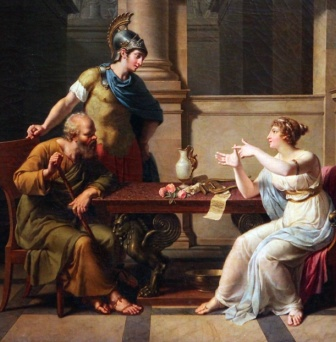
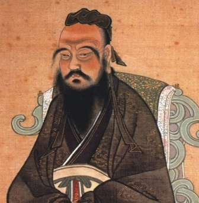

Il Samkhya
Considerato il più antico sistema filosofico indiano, il Samkhya getta le basi teoriche per la millenaria pratica dello Yoga. Secondo il Samkhya, è possibile raggiungere la liberazione dalla condizione umana, piena di sofferenza, attraverso la conoscenza e la comprensione analitica della realtà, che consente di cogliere l’esistenza di due principi, la Natura (Prakriti) e lo Spirito (Purusha), dal cui incontro nasce la realtà fenomenica. Il seguace del Samkhya scopre di non essere l’individualità psicofisica, l’insieme di sensi, corpo e mente, ma lo Spirito, libero da ogni legame naturale. [
Leggi]

Socrate
Nei
Memorabili Senofonte ci presenta un Socrate diverso da quello dei dialoghi platonici: una figura che a molti è parsa troppo umana, lontana dalla grandezza tragica del personaggio platonico, ma che altri – tra cui Hegel – considerano più autentica. La scarsa propensione di Senofonte alla filosofia (come storico scriverà l’Anabasi) è da un lato un limite, perché non gli consentiva di cogliere gli aspetti più raffinati del messaggio socratico, e dall’altro sembra garantire una maggiore fedeltà nella registrazione di quanto detto e fatto dal maestro. [
Leggi]

Confucio
Noto in occidente con il nome latinizzato Confucio, Kongzi (Maestro Kong) colpisce per il carattere laico del suo insegnamento: benché sia stato venerato per secoli, in Cina, come il Maestro per eccellenza, non ha alcun tratto divino, non compie miracoli, non si attribuisce alcuna rivelazione. Il suo messaggio, espresso in modo colloquiale e solo apparentemente semplice, si concentra, come quello di Socrate, sui grandi temi morali. Al centro è il concetto di ren (仁), tradotto con benevolenza, reciprocità o umanità. [
Leggi]